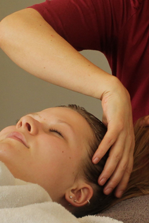

Even voorstellen ...

Even voorstellen
Het was voor mij al heel vroeg duidelijk dat ik met mensen wilde werken en dat mijn handen daarin een belangrijke rol zouden spelen. Ik koos voor de opleiding tot activiteitenbegeleidster en werkte binnen de reguliere gezondheidszorg vaak met ouderen, maar ook met jongeren die de richting in hun leven kwijt waren geraakt.
Ik realiseerde me steeds meer hoe belangrijk aanraking is. Maar ook hoe belangrijk persoonlijk contact is. En juist voor deze twee essentiële elementen ontbrak de tijd. Ik nam afscheid van de reguliere gezondheidszorg en ging me steeds meer interesseren in diverse vormen van massage.
Opleiding en ervaring
Ik volgde de opleiding sportmassage, een aantal cursussen en workshops in o.a gewrichtsontspanningsmassage en rebalancingmassage. En ik vergaarde kennis over de bouw en de werking van het lichaam.
Ik startte de opleiding voor schoonheidsspecialiste aan het Gelders opleidingsinstituut. Hier begon mijn zoektocht naar huidverzorgings producten die je echt iets kunnen geven. Dit vond ik in de 100% natuurzuivere producten waarmee ik op dit moment werk, Lakshmi.
Na het behalen van het diploma deed ik werkervaring op in een Ayurvedisch kuuroord en in mijn eigen praktijk aan huis. Ayurvedische massages en lichaamsbehandelingen gaan dieper dan een klassieke behandeling en worden gekenmerkt door het feit dat er rekening wordt gehouden met de constitutie van de persoon.
Na jarenlange ervaring bied ik u authentieke behandelingen aan die gericht zijn op innerlijk welzijn en huidverbetering.
Openingstijden:
3 dagen per week, op afspraak
Adres: Het Burkink 1, Warnsveld
E-mail: info@orange-flower.nl
Klik hier voor recensies